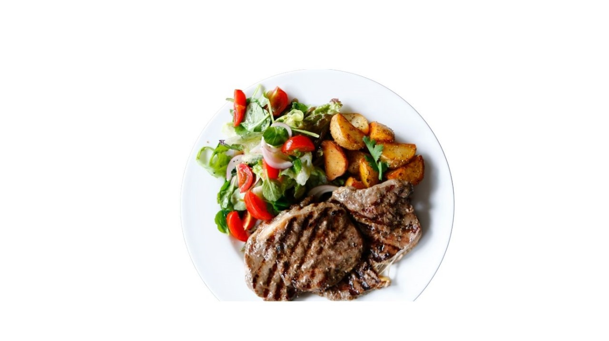

AMERICAN CUISINE

Beef Steak
Beef steak is the epitome of hearty indulgence—perfectly seared on the outside, tender and juicy on the inside. Each bite is a celebration of rich, savory flavors that satisfy the deepest cravings, making it a timeless favorite across cultures and cuisines.